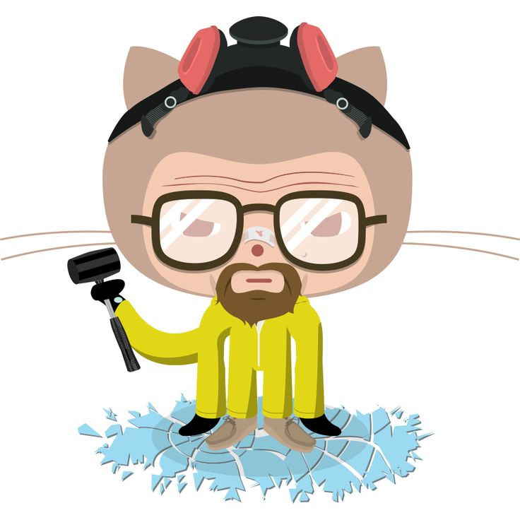

Git
Git - distributed source code management
- Concepts
- Local commands
- Remote commands
- Workflows
- Tools
I have all the code
Concepts
- Repository
- Working directory
- Index
- Commit
- Remotes
- Branches
Repository
All files and sub-folders in the prject folder.
Files can be excluded through the .gitignore file
Remotes
Other repositories represented by a name and a url
List remotes by running git remote -v
Working directory
The current state of the repository
See changed files by running git status
Or view all changes by running git diff
Index
Selected changes waiting to be committed.
Add changes by running the git add command
Commits
A SHA1 identified package of changes. Each commit points to its parent commit.
The commit history can be explored with git log
Branches
Branches are simply pointers to commits.
The HEAD points to the current commit.
List branches with git branch -v

Local commands:
#create a new repository in the current dir
$ git init
#add files to the index
$ git add
#create a new commit
$ git commit
#show the status of the working dir vs the index
$ git status
#get specific versions of files
$ git checkout
#manipulate branches
$ git branch
More local commands:
#explore the tree of commits
$ git log
#move the HEAD pointer
$ git reset
#create a commit with muliple parent commits
$ git merge
#re-create a commit on top of a different parent
$ git rebase
Remote commands:
#download a repository from a given url
$ git clone
#download commits from a remote repository
$ git fetch
#upload commits to a remote repository
$ git push
tell git your name and email
git config --global user.name="XXX YYY"
git config --global user.email="ZZZ@aubg.bg"
sets up a new repository in the current folder
git init
check the state of your git repository
git status
promote code snippets to be included in the next commit
git add -p
create a commit with the given message
git commit -m "MSG MSG MSG"
explore the history of commits in your project
git log --graph --oneline
Workflows
- All-in-master
- Feature branches
- Pull/Merge requests
- Multi-tier
Hooks:
- Client eg. Pre-commit
- Server eg. Post-update
Links:
Course Schedule:
| week 1 03.02.2017 | History of the web | Fullstack Principles | Development Processes | Agile Processes | DevOps Basics | Git |
| week 2 10.02.2017 | Frontend Overview | Backend Overview | Network Overview | Testing | JavaScript Overview | JavaScript Tooling |
| week 3 17.02.2017 | Web Architectures | RESTful principles | SOLID principles | Web Components | Continuous Integration | |
| week 4 24.02.2017 | Databases basics | Using APIs | Deployment Automation | Monitoring | In-class project consultations | |
| week 5 17.03.2017 |
Project presentations Final Test Course Retrospective and Q&A |
|||||